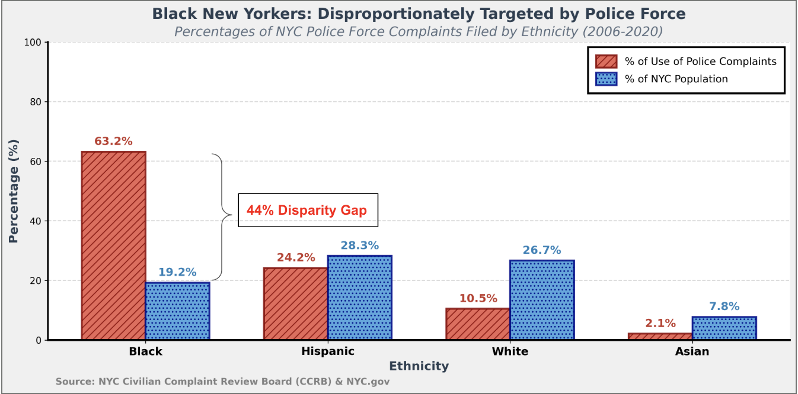
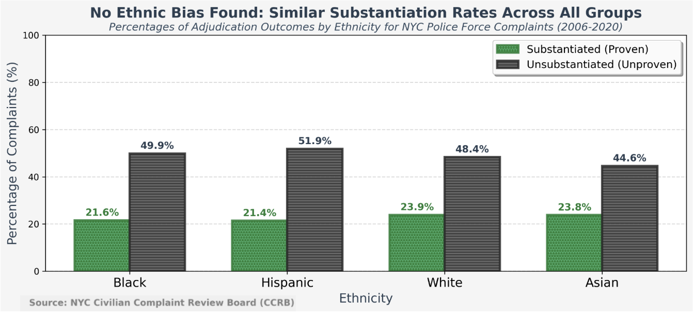

Proposition:
Racial Profiling in Action: Black New Yorkers Overrepresented in Police Complaints
FOR the Proposition

Design Decisions and Rationale:
- Data transformation: Instances where complainant_ethnicity was missing from NYC Civilian Complaint Review Board are excluded from the analysis. The complainant_ethnicity field was sorted into four main categories: Black, Hispanic, White, and Asian. The percentage of complaints for each group was calculated by dividing each group's count by the total number of complaints across all four categories. To further strengthen the disparity argument, these complaint percentages were then compared against NYC population demographic percentages obtained from NYC Planning Population FactFinder. The visualization focuses on data from 2006 to 2020 to align with the available population data timeframe. Ethnicity groups were ordered from highest to lowest by their complaint-filing percentages to create a descending visual narrative that emphasizes the disproportionate representation of Black New Yorkers in police force complaints. I used the real dataset and calculated all the numbers honestly, thus rating myself a 2 on the honesty scale.
- Title: My main title (bolded in black) made a definitive causal claim ("targeted by") rather than simply describing the data pattern. Specifically, the title contains emotionally-charged language that suggests deliberate discrimination, aiming to influence the interpretation of the data before the audience examines the evidence. While the disparity is real and the inference may be reasonable, my title presents interpretation as fact rather than as one possible explanation for the observed pattern. I also provided a lighter-weight subtitle with a more factual description of the data ("Percentages of NYC Police Force Complaints Filed by Ethnicity (2006-2020)") without asserting causation, which helps maintain credibility. While using declarative titles makes visualization more persuasive, I rate this on the honesty scale as -2 since this deceptive framing tells the audience what to conclude rather than letting them draw their own conclusions from the evidence.
- Plot annotation: To further support the title, I directly annotated the main takeaway in the plot by highlighting the disparity gap (63.2% complaints - 19.2% population = 44% gap) for Black residents, drawing immediate attention to this specific comparison. Similar calculations for the other ethnic groups were not included. This method of selective annotation aimed to guide the audience's interpretation toward my intended proposition as stated in the plot's title. I would rate the honesty scale as 1.0. Though excluding the same calculation for the other ethnic groups, this action is not fully deceptive since the calculation is mathematically accurate and clearly labeled.
- Colors and Bars: I chose diagonal hatching in the red bars to enhance visual attention and textural differentiation, while the red-versus-blue color scheme depicts a "problem versus baseline" framework. Red draws focus to complaint percentages as the concern, positioning blue population data as a neutral reference point. This color pairing subtly encourages the audience to interpret the disparity, especially the elevated red bar for Black New Yorkers, as evidence of inequity rather than as a neutral statistical observation. I would rate the honesty scale as -0.5. since the red-versus-blue color scheme carries implicit emotional connotations that frame the interpretation before the audience consciously processes the data.
AGAINST the Proposition

Design Decisions and Rationale:
- Data transformation: This visualization shifts the focus from how many complaints are filed (Figure 1) to what percentage of those complaints are substantiated (proven) versus unsubstantiated (unproven). Percentages of adjudication outcomes were calculated by dividing the complaints filed by each ethnicity judicial decision by the total number of complaints. This directly counters the "targeting" narrative by showing that even though Black New Yorkers file more complaints, those complaints are not substantiated at higher rates, but similar to other ethnic groups, which could indicate they're not experiencing disproportionate police misconduct but rather filing complaints at higher rates for other reasons. I will rate myself a 2 on the honesty score because this visualization earnestly reports real data. However, it is a clever design to ignore the volume disparity entirely that was addressed in the opposition argument, which will be addressed in my next design decision.
- Data Omission: The visualization completely ignores the massive disparity in complaint-filing rates shown in Figure 1. By focusing exclusively on substantiation rates and never mentioning that Black New Yorkers face a 44% disparity gap, this visualization presents an incomplete picture that omits the most important evidence of potential bias. It's like saying that "all murder trials have similar conviction rates across races" while ignoring the fact that one race is prosecuted for murder at vastly disproportionate rates. If they're not paying careful attention, the audience might miss that the visualization answers a different question ("Are complaints adjudicated fairly?") while pretending to answer the original one ("Is there ethnic bias in policing?").
I deliberately excluded any mention of filing volumes because including them would undermine the "no bias" argument. By showing only the back-end adjudication process, I can argue that the system is fair while ignoring the front-end disparities in police encounters. This selective presentation makes the visualization persuasive for the opposing proposition, but also highly deceptive. Therefore, I will rate this a -2 on the honesty scale. - Title: The visualization includes a bolded, main title that makes a definitive conclusion ("No Ethnic Bias Found") based on the substantiation rates alone. The title guides the audience to interpret the visual evidence as proof of fair treatment (similar substantiation rates) as proof of causation (no bias exists), which is a logical fallacy. Just because complaints are adjudicated similarly doesn't mean bias doesn't exist in the initial police encounters that led to those complaints. I also used emotionally neutral, authoritative language ("Found") and a lighter-weight, descriptive subtitle, "Percentages of Adjudication Outcomes by Ethnicity for NYC Police Force Complaints (2006-2020)," which mimics scientific objectivity to lend credibility to what is actually a selective interpretation from the main title. This design choice is highly deceptive because it cherry-picks one metric that supports the desired conclusion while ignoring contradictory evidence, placing me with a rating of -2 on the honesty scale.
- Colors: The green color chosen for substantiated complaints carries positive connotations, while gray suggests neutrality. This color scheme subtly shows that substantiation as "good" and creates an implicit value judgment. By showing that all groups have similar green bar heights, I visually communicate equality in outcomes. Gray was chosen for unsubstantiated complaints to suggest these cases were dismissed, or unsubstantiated, making them visually recede despite being the majority of complaints. This color hierarchy subtly guides viewers to focus on the green bars' similarity while downplaying the prominence of gray bars, supporting the "no bias" argument by emphasizing equal validation rates rather than high dismissal rates. I would rate myself a 1.5 on the honesty scale.
- x-Axis: Unlike the first visualization, which ordered groups by data volumes (highest to lowest) to create a dramatic descending narrative, this visualization uses the same label ordering as Figure 1. This appears neutral and objective, avoiding any visual hierarchy that might suggest one group is more important than another, while maintaining consistency for comparison of two opposing propositions. I would rate myself a 2 on the honesty scale.
Final Reflection
Racial profiling has always been a hot discussion topic in the United States over the past three decades. This practice is deeply harmful because it unfairly targets individuals based on their race, ethnicity, or perceived background rather than on evidence or behavior. It also reinforces harmful stereotypes, erodes trust between communities and law enforcement, and leads to unequal treatment under the law in marginalized groups. Through this project, I created two visualizations arguing opposing sides of whether Black New Yorkers are disproportionately targeted by the police force. Figure 1 argued for the proposition by comparing complaint-filing rates to population demographics, while Figure 2 argued against it by showing similar complaint substantiation rates across all ethnic groups. This assignment illustrated how the same dataset can be transformed and presented in drastically different ways to support contradictory conclusions, depending on which metrics are highlighted and which are omitted.
One main takeaway from this project is realizing how an individual presenting data can influence people's opinions more effectively than actually lying about or changing the numbers. For example, both of my visualizations contained mathematically accurate numbers, yet they tell completely opposite stories. Figure 1's strength lies in its comparison between complaint rates (63.2%) and population share (19.2%), creating a visceral 44 percentage point gap that immediately signals disproportionality. Other features, such as descending bars, an emotionally-charged title ("Disproportionately Targeted"), and a strategic red-versus-blue color scheme, all further guide the audience toward interpreting this disparity as evidence of systemic bias. On the other hand, Figure 2 employs an entirely different strategy by ignoring complaint volumes altogether and focusing exclusively on adjudication outcomes. By showing that substantiation rates are similar across all groups (21-24%), it argues that the system treats complaints fairly regardless of ethnicity. The declarative title ("No Ethnic Bias Found") and the green-versus-gray color scheme (suggesting "validated" versus "dismissed") present similarity as proof of equity. Most deceptively, this visualization answers a different question, “whether complaints are adjudicated fairly,” while implying it addresses the original question of whether ethnic bias exists in policing encounters. Creating Figure 2 felt ethically uncomfortable, even as an academic exercise, because it required me to downplay evidence of racial disparity strategically. This discomfort reminded me that visualization skills can be used to obscure truth as easily as reveal it, and that persuasive techniques carry moral weight regardless of the context in which they're used.
Before this assignment, I understood data visualization ethics primarily in terms of obvious distortions such as: truncated axes, cherry-picked data, or misleading scales, but this project taught me that omission can be more deceptive than distortion. Figure 2's complete silence about complaint-filing volumes is arguably its most deceptive feature, yet it involves no mathematical manipulation. By showing only substantiation rates, it presents a technically accurate but fundamentally incomplete picture that omits the strongest evidence mentioned in Figure 1. This revealed how stakeholders with different agendas can use the same dataset to support contradictory positions simply by choosing which metrics to include or exclude in the real world. As a future data analyst, I now recognize the ethical responsibility I carry. Every visualization choice I make will shape how audiences understand reality, and when addressing social justice issues like racial profiling, these choices have real consequences for public perception, policy decisions, and marginalized communities. Ultimately, this project taught me that data visualization is not just a technical skill but a rhetorical and ethical practice. My goal should not be to eliminate persuasion, but to ensure persuasion is grounded in honest representation, acknowledgement of limitations, and respects the audience's capacity for critical thinking.